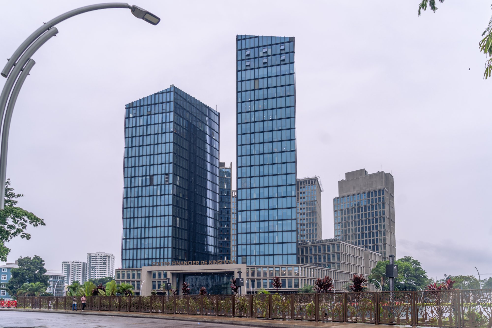
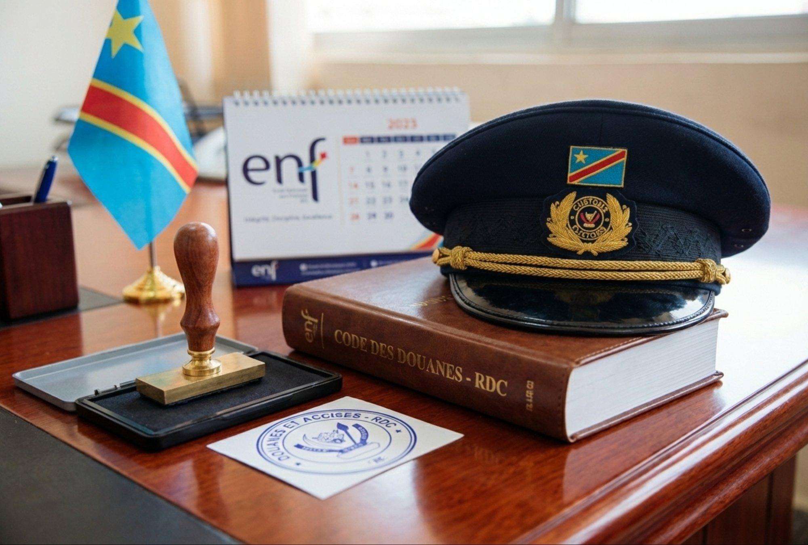

Amélioration de l’environnement de travail : actions engagées au sein de l’ENF
Parmi les actions engagées figurent la modernisation et le réaménagement des espaces de travail et des salles de formation, ainsi que la révision et la rationalisation de l’organisation du travail, en vue d’un suivi plus structuré des missions.

Programme de Formation au profit des agents de l’Inspection Générale des Finances.
Structuré autour de cinq modules, ce programme porte sur les Nouvelles Technologies de l’Information et de la Communication ; l’audit et le contrôle des finances publiques ; la passation et l’exécution des marchés publics ; les finances publiques au regard de la législation en vigueur ainsi que la cybersécurité et la prévention de la fraude.

Formation des formateurs en andragogie : l’ENF renforce les compétences pédagogiques
Animée par l’expert Mounir BOUCHAA de la société BM WORLDWIDE CONSULTING de Serris-France, cette session visait à renforcer les compétences pédagogiques des formateurs et administratifs de l’Ecole.

Inauguration de la nouvelle salle informatique équipée
L'ENF s'est dotée d'une salle informatique de dernière génération pour les formations numériques.

Résultats du Concours d'Entrée — Édition 2025
Les résultats définitifs ont été proclamés. Consultez la liste des admis par filière.

Audience de la DG au Cabinet du Ministre des Finances
Point sur les réformes pédagogiques en cours et les perspectives de développement.

Rentrée de la formation initiale — Promotion 2025-2027
Cérémonie de rentrée sous le signe de l'engagement et de l'excellence.